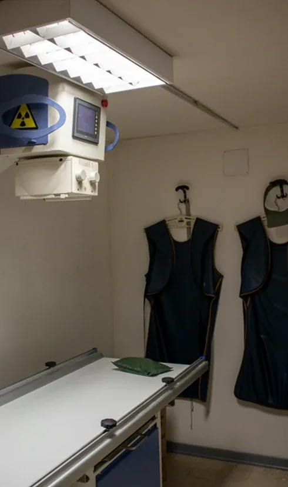
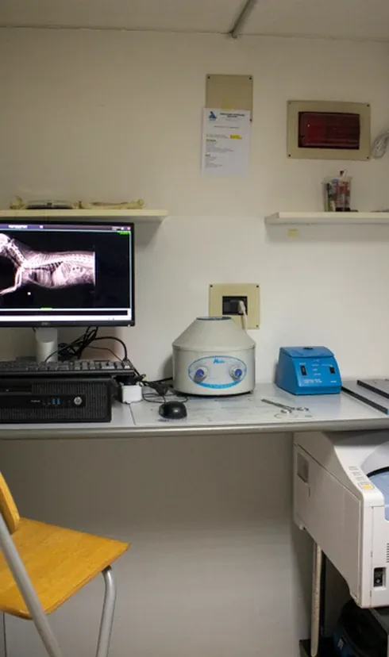
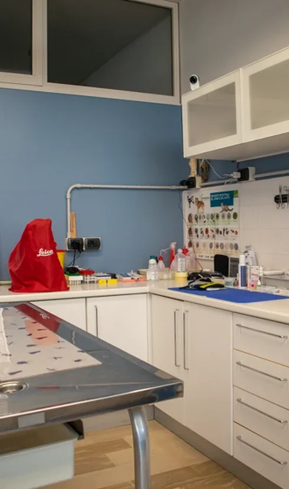
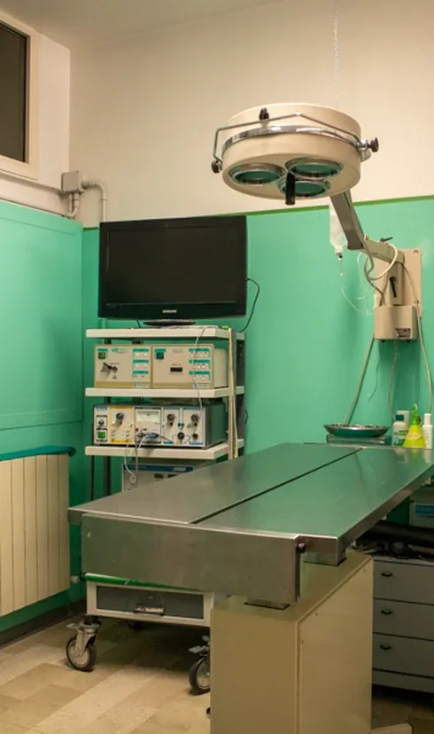

Visite
- Vaccinazioni
- Visite specialistiche
- Controlli terapeutici
- Pulizia dentale
- Parto




L'ambulatorio veterinario Misantone è una clinica che si occupa di animali domestici: cani, gatti, roditori. Offre numerosi servizi che, accompagnati da esperienza e formazione continua, garantiscono qualità nell'assistenza del tuo amico a quattro zampe.
Ricovero diurno, monitoraggio post-operatorio e terapie infusionali assistite.
Refertazione rapida in sede per esami ematochimici, citologici e diagnostica per immagini.
Esami & chirurgia
Per prelievi, ecografie addominali o interventi è richiesto un digiuno alimentare di 8–12 ore (acqua fresca consentita).
Libretto sanitario
Porta sempre il libretto delle vaccinazioni e gli eventuali referti o terapie recenti eseguite altrove.
Trasporto sereno
Usa il guinzaglio per i cani e un trasportino rigido e coperto da un telo per gatti e piccoli roditori.
Sì, è preferibile chiamare lo 0861 241533 o il 328 3666840 per fissare un orario ed evitare inutili attese al tuo animale. Il sabato mattina si riceve solo su appuntamento.
Per urgenze cliniche, compreso il sabato pomeriggio e la domenica, è attivo il numero dedicato 328 053 3005.
L’ambulatorio assiste regolarmente cani, gatti e piccoli roditori da compagnia (come conigli e cavie).
Per prelievi ematochimici, ecografia addominale e chirurgia è indicato un digiuno alimentare di 8–12 ore lasciando acqua fresca disponibile, salvo diverse istruzioni al momento della prenotazione.
La clinica si trova su Viale Giovanni Bovio 175 a Teramo, una strada ampia e comoda con possibilità di sosta nelle immediate vicinanze.